部署于4.3 km高山的稳定激光器
摘要
我们提出了一种可搬运稳定激光器系统，该系统基于10 cm参考谐振腔和用于钟波长的全光纤相位稳定分配网络。我们重点介绍一种扩展长方体谐振腔几何结构，其间隔物体积比同长度传统立方谐振腔小4倍[30]。我们在所有轴向上均实现了低于的可重复加速度灵敏度，以及低至的分数频率不稳定度。我们还展示了在全光纤光学系统中，将稳定光在10 m光纤上分配，准确度低于水平。我们报告了将激光器系统成功部署到海拔4300 m的Mount Blue Sky山顶，并首次报告了在实验室外测得的16位激光器不稳定度。
过去十年，利用最先进相干光的量子传感器和光学传感器取得了快速发展。特别是，光钟已展示出第18位及更高位的不确定度，超越了当前标准[25, 2, 14, 24]。重新定义国际单位制（SI）秒的主要障碍之一，是需要跨洲进行钟比对[7]。全球计量学家正在建造可搬运光钟，这些光钟可运往海外，用于SI重新定义和计时水准测量[29, 10, 3, 4]。与此同时，GRACE Follow-On任务利用激光测距干涉测量以纳米级精密度定位两颗卫星的成功[1]，激发了大量空间精密测量提案。这两项技术都依赖稳健的稳定激光器，在恶劣环境中提供高度相干的探测光。
最先进的参考谐振腔已在室温下展示出低于的分数频率不稳定度[20, 27]，并在低温下展示出低于的分数频率不稳定度[17, 34]。然而，这些谐振腔以精确几何结构进行松散支撑，以最小化振动灵敏度。可搬运谐振腔必须在运输过程中锁定到位，同时保持低振动灵敏度[30, 5]。此外，可搬运激光器系统必须考虑尺寸、重量和功率约束，同时不能过多牺牲性能。目前，最好的可搬运稳定激光器系统已在实验室中展示出低至16位数字的频率稳定度[29, 12, 32, 16]，并在现场报告了至少15位稳定度[10, 3, 6, 4, 28, 13]。
我们展示了一种可运输稳定激光系统（TSLS），该系统在 钟波长处生成 16 位稳定的光。TSLS 由具有 不稳定度的可运输谐振腔（CavT）和时钟激光路由中心（CLaRC）组成，后者以 5,000 s 时高达 的精度，通过光纤噪声消除（FNC）分发腔参考或钟参考光。我们将该系统从 NIST 实验室运输 105 km 至蓝天空山山顶（4300 m），在那里我们使用可运输 晶格钟作为频率鉴别器确认了激光稳定性。此外，CavT 的成功验证了一种强调可制造性而不牺牲重复性的间隔器设计。
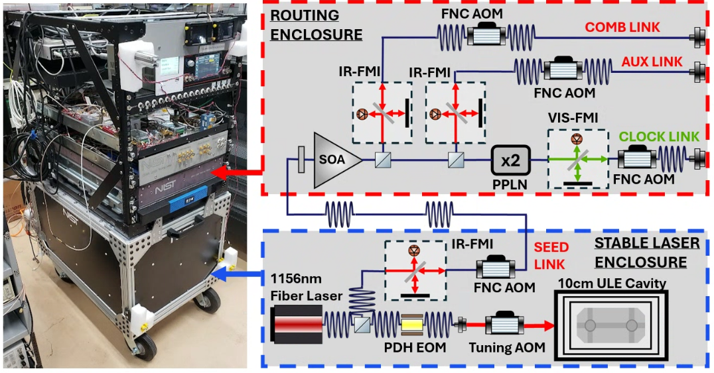
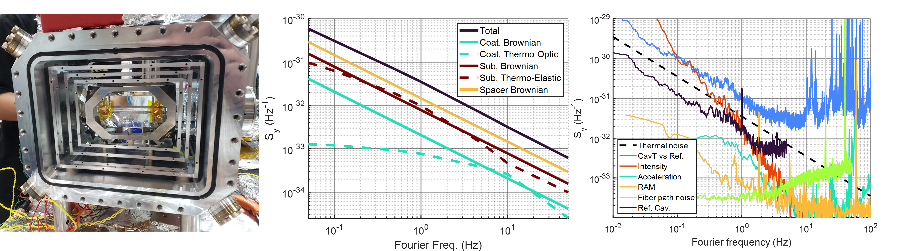
我们对 CavT 的目标是采用紧凑设计实现低 16 位不稳定度，以便在未来的迭代中轻松复制。可复制性的一个众所周知的障碍是每次将谐振腔安装到其支撑结构时谐振腔的加速度灵敏度会发生变化 [19, 11]。为避免此问题，我们优先考虑简单的安装几何形状和组装过程。尽管在 [12] 中开发的线安装谐振腔在小体积内表现出优越且非常一致的加速度灵敏度（在低 范围内）[12, 16]，但将谐振腔安装在电线（或 [32] 中的螺纹 Invar 杆）上涉及一些额外的复杂性（电线、定制紧固件、电弧焊）。另一方面，Webster 等人开发的立方体谐振腔 [30] 只有四个固定螺钉，以更大的间隔器为代价简化了组装。我们的扩展长方体设计（图 3）继承了这种简单性，同时在给定腔长的情况下将间隔器的体积减少了 4 倍。
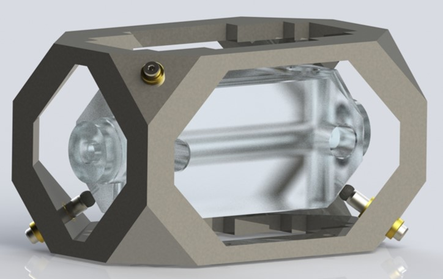
继 [30] 之后，我们采用有限元分析优化 CavT 的间隔体几何结构，使其对惯性力和所施加的夹持力不敏感（见补充材料）[9]。我们选择氟橡胶（Viton）作为安装球材料以避免塑性变形。我们可重复地实现了量级为 的加速度灵敏度，如表 1 所示。稳定激光器外壳内的加速度通过集成的主动隔振（AVI）平台加以抑制。正如我们的不稳定度预算（图 2，右图）所反映的，这足以实现低 16 位数的性能。我们尝试通过真空腔的旋转馈通装置原位（in situ）调节安装螺钉来进一步改善加速度灵敏度（详见补充材料）。
| 1st time mounting | |||
| 2nd time mounting | — | ||
| As deployed |
为了在小型封装内实现低 16 位数的不稳定度，CavT 的长度选为 10 cm。为最小化热机械噪声，我们在曲率半径为 10.2 m 的熔融石英（FS）基底上采用了 高反射（HR）镀膜。我们测得 TEM00 模的精细度为 253,000。继 [15] 之后，我们采用有限元分析（FEA）估算 ULE 间隔体的布朗运动。热噪声贡献汇总于图 2 中图（详见补充材料）。
为稳定漂移率，CavT 的间隔体由康宁 7973 ULE 玻璃加工而成。我们在反射镜上增设了 6.35 mm 的 ULE 背衬环，将热膨胀系数零交叉点（ZCTE）移至 30 ∘C [18]。我们测得的 ZCTE 接近 20 ∘C，这一差异在补充材料中讨论。内部带电部件耗散的热量使稳定激光器外壳内的温度升至约 30 ∘C。为便于实际运行，真空腔采用加热器稳定在 32 ∘C。我们依靠三层被动热屏蔽（图 2）来减小温度波动。腔漂移率受热漂移限制，典型值约为 100 mHz/s，通过施加到种子 FNC 链路射频参考上的相位连续频率斜坡在一阶上予以抵消（图 1）。通过以约 30 分钟的间隔调整补偿斜坡，我们能够将未补偿的漂移率限制在 3 mHz/s 以下。
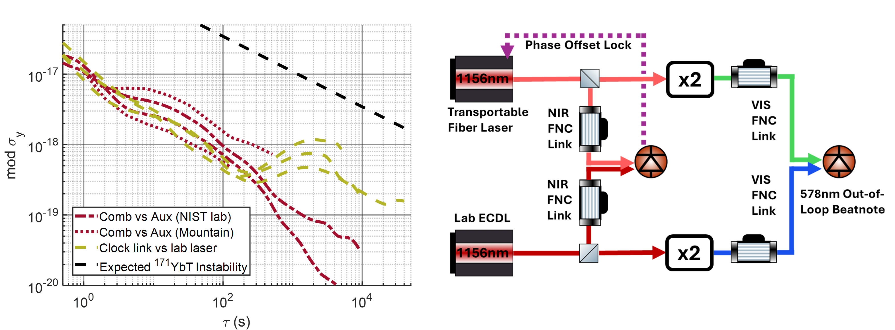
CavT 的稳定度是相对于 NIST 一台固定的 29 cm ULE 谐振腔进行测量的（ 对应 s）[25]。在 1 Hz 及以下的时间尺度上，不稳定度预算（图 2）由光强起伏主导。光强依赖性主要来源于反射镜镀膜的光致双折射响应、基底的光热弹性响应以及反射镜镀膜的光热折射响应 [16, 22]。我们通过优化选择相位调制器并进行温度稳定来被动控制残余幅度调制（RAM），方法与 [12] 相同。为简化起见，我们通常不采用主动 RAM 抵消。我们实现的频率稳定度为 ，来自 ** 我们推测性地指出，[23] 中观察到的自发双折射噪声在 48 cm 腔中于 1 s 时贡献了 ，若其他所有变量相同，在我们 10 cm 腔中将贡献 。这与我们在 1 s 时观测到的不稳定度非常吻合。
我们对 CLaRC 的设计目标是以 或更优的准确度分发稳定光，并保证长期可靠性。我们生成一路 578 nm 光用于 interrogating 一台 光晶格钟，并生成两路 1156 nm 光用于与其他光参考进行频率比对。CLaRC 完全由保偏（PM）光纤光学器件构建，其设计受 [26, 6] 的启发。与自由空间分发系统 [12, 4] 不同，光纤光学组件在运输后无需重新装调，而且选用保偏光纤有助于在温度变化和机械扰动下保持 FNC 链路的输出偏振。
为了进一步降低环境对相位稳定度的影响，我们通过熔接将所有未补偿光纤的长度减至最小。为容纳这些未补偿的光纤光学器件，我们设计了一个具有 25 dB 声学屏蔽能力的机箱，内部配有采用 Peltier 制冷器进行温度稳定的面包板，整体全部容纳在 2 个机架单位、深 76 cm 的空间内（图 5）。为兼顾设计灵活性与稳定性，我们将每个光纤迈克尔逊干涉仪安置在垫圈密封的盒子中。我们还将种子逆反射器、SOA 和必要的法拉第隔离器安置在垫圈密封的盒子中，以进一步屏蔽其中 7 m 的未补偿光纤。
与 [26] 不同，我们在光纤耦合的 PPLN 倍频器中进行二次谐波产生。这样做的优点是省去了时钟物理组件上的自由空间倍频器和转向光学元件，否则这些元件需要定期重新装调。此外，我们的架构还有一个优点，即能够补偿物理组件上光纤出射端与时钟晶格逆反射器之间自由空间光路的起伏。这降低了因物理组件光学元件上与实验循环同步的振动（例如，由磁场开关驱动的光路偏转）而引起时钟跃迁表观频移的风险 [8]。图 4 给出了这些链路的稳定度和准确度，与 [26, 6] 相当。我们在“comb”和“aux”链路中产生 >4 mW 的 1156 nm 光功率，在时钟链路中产生 0.7 mW 的 578 nm 光功率，适用于时钟谱探测和纵向边带冷却。
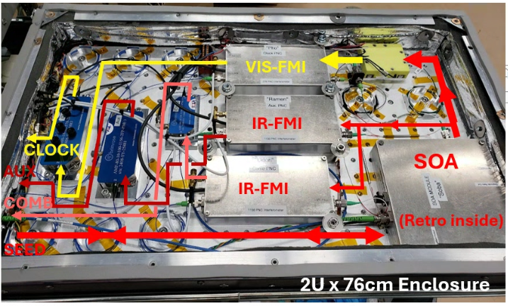
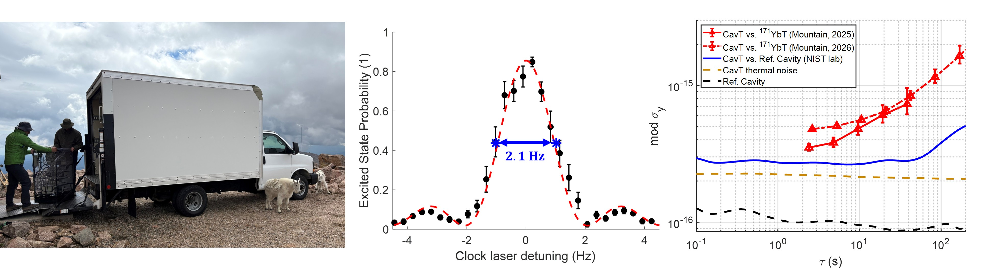
2025 年 8 月 8 日，我们的可搬运激光系统被装上厢式货车，行程 105 km，从科罗拉多州博尔德的 NIST 园区（海拔 1,655 m）前往蓝山山顶的 Meyer-Womble 天文台（海拔 4,326 m）（图 6）。该天文台没有气候控制设施。在天文台内，部署团队搭建了一个配有恒温控制风扇的帐篷，以保护可搬运时钟系统免受剧烈温度变化的影响。帐篷内的温度仍呈昼夜变化，变化幅度为 ∘C。稳频激光组件在该环境下未出现任何问题。补偿 CavT 的热漂移所需的人工干预频率，在山上与在实验室内大致相同。2026 年 6 月 11 日，该系统再次被运往蓝山，我们重复了 2025 年的测量。为 2026 年部署对 TSLS 所做的修改见补充材料。
在山顶，我们以可搬运的光晶格钟（YbT）作为独立频率参考，测量了 TSLS 的稳定度。我们用来自 CLaRC “时钟”通道的 578 nm 光，以 240 ms 拉比脉冲照射 YbT，并将激光器频率失谐到谱线一侧，在该处激发态原子的比例对 TSLS 频率最为灵敏。每次脉冲时，我们在拉比谱线（单一塞曼态）的上升侧与下降侧之间交替。通过从谱线上升侧测得的激发态比例中减去下降侧测得的激发态比例，我们估计 TSLS 相对于原子谱线的频率误差。为防止 TSLS 在长时间测量中漂离谱线一侧，每当测得的频率误差超过原子线宽的四分之一时，我们就对 TSLS 施加一次频率修正。在图 6 所示的数据中，这些自动修正大约每分钟施加一次。为估计 TSLS 的绝对频率偏差，我们将相对于原子谱线测得的频率误差与累计的自动频率修正相加。在扣除线性漂移后，我们计算测得激光频率的修正阿伦偏差，结果示于图 6 右 panel。此外，在山顶，我们还通过将光束在自由空间中合束并对检测到的拍频进行计数，比较了“Aux”和“Comb”两条 1156 nm FNC 链路，如图 4 所示。
总之，我们演示了一种与野外量级光晶格钟运行兼容的先进水平 TSLS。稳定参考谐振腔在 1 s 平均时间下达到。时钟光路由网络在紧凑且稳健的封装中实现了路由准确度，且不含自由空间光学元件。最后，我们首次在实验室外的极端环境中演示了低 16 位量级的频率稳定度。
资助 本工作得到 NIST、DARPA、ONR 以及 NSF QLCI 奖 OMA-2016244 的支持。
致谢 我们感谢 Theodora Triano、Grace Jenkins、William Swann、Ian Coddington、Marco Pomponio、Craig Nelson 和 Archita Hati 的技术贡献。
披露 作者声明无利益冲突。本工作不暗示或表明任何美国政府对任何公司的认可。
数据可用性 本文结果所依据的数据可在合理请求下提供。
支持性信息见补充材料。
补充信息
附录 A 谐振腔热噪声
按照[15]，CavT 的热噪声可分解为来自间隔件、基底和反射镜镀膜的布朗热力学贡献，以及来自基底的热弹性贡献和来自镀膜的热折射贡献。
| (1) |
遵循[15]，我们通过解析方法估计镀膜和基片布朗贡献的 1/f 系数（图 2 中间面板）。我们还通过解析方法估计基片热弹性和镀膜热折射贡献 [12]。
| ULE | Fused silica | |||
|---|---|---|---|---|
| 67.6 | 72 | 100 | Young’s modulus (GPa) | |
| 16.7 | 1 | 0.24 | Loss angle () | |
| 0.17 | 0.17 | 0.32 | Poisson ratio | |
| 1.7 | 1.64 | 1.70/1.75 | 体积热容（） | |
| 0.06(3) | 0.51 | 5.2/5.7 | 热膨胀系数（） | |
| 1.38 | 1.38 | 70/55 | Thermal conductivity ( | |
| - | - | 179/366 | 有效热折射率（） | |
| - | - | 2.96/3.39 | Index of refraction |
| Symbol | Value | Description |
|---|---|---|
| 1156 nm | Operating wavelength | |
| 513 | Spot size at mirror | |
| 6.35 mm | Substrate thickness | |
| 25.4 mm | Substrate outer diameter | |
| 10.2 m | 基片曲率半径 | |
| 6.6 | Coating thickness | |
| 10 cm | Spacer length | |
| 40 N | Holding force |
我们遵循[15]的方法来估计间隔件的布朗噪声，并考虑其独特几何结构。使用有限元模型，我们对每个反射镜表面施加一个跟随 TEM00 光束分布的拉伸压力分布：
| (2) |
其中是设为 1 N 的测试力。我们评估间隔件在模拟测试力作用下的应变能变化，并由估计间隔件的布朗噪声贡献。
| (3) |
附录 B 力不敏感扩展间隔件
为最小化谐振腔的加速度灵敏度，必须使用有限元分析（FEA）优化间隔件几何结构。间隔件几何结构受 NPL 的立方设计[30]启发，并遵循类似的工程设计流程[9]。在 NPL 立方谐振腔的设计过程中，作者改变顶点深度以抵消腔长对保持力的灵敏度（力灵敏度），随后他们验证了加速度灵敏度也被抵消[30]。在我们的扩展长方体设计中，我们发现沿光轴延长谐振腔会使力灵敏度向负方向偏移，因此仅靠顶点深度无法抵消力灵敏度。我们还将间隔件的通气孔拆分为对称的通气孔对，并改变通气孔之间的偏移量以及顶点深度，以最小化力灵敏度（图 7）。与 NPL 的情形一样，我们发现对于针对力灵敏度优化的几何结构，加速度灵敏度也被控制在水平。
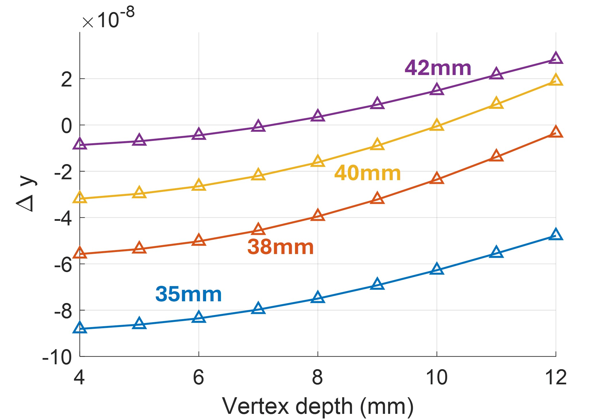
我们在隔块的四个角上设置了 4 个 1.5 mm 盲孔，以便在装配时用定位销将隔块对准其安装笼。但我们发现，用量块将隔块在安装笼上居中能得到更一致的结果，因此这 4 个盲孔未被使用。另外 4 个角则预留给安装球。
隔块的机械图纸如图 8 所示。我们让加工方尽其所能对隔块的所有棱边（内部和外部）进行倒角，以消除应力集中。此外，我们对隔块的所有内表面进行了抛光，以减少高精细度反射镜附近的粉尘产生，并对端面进行了抛光，以便与反射镜基板实现光学接触。
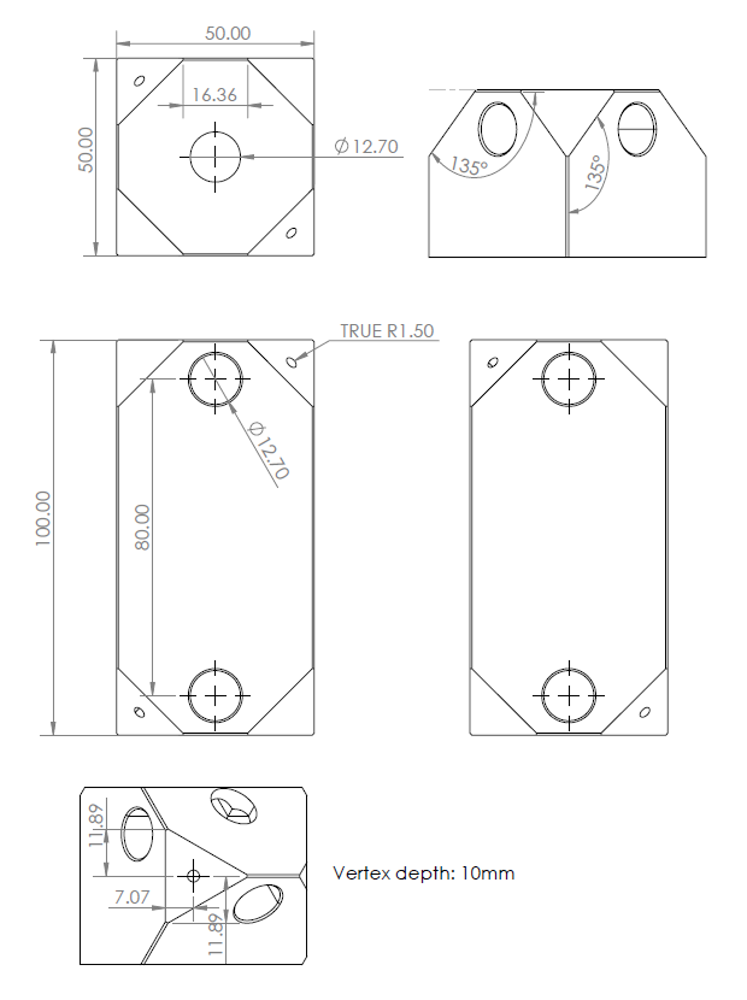
附录 C 加速度灵敏度的测量
为测量加速度灵敏度，我们测量谐振腔翻转 180 度时的相对频率变化，再除以 2g。这些测量使用一套带旋转台面的原型装置完成（图 9）。整个过程中，CavT 由离子泵维持在低于 mPa 的真空中。每次翻转后，我们等待所有弛豫过程结束（例如翻转期间 CavT 的 PDH 锁丢失后的光热弛豫），然后再记录频率变化。
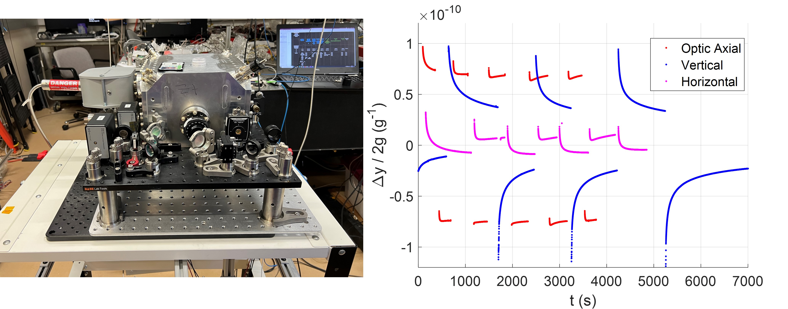
附录 D 原位（In Situ）调节加速度灵敏度
我们尝试利用旋转馈通件在不破坏真空的情况下转动安装螺钉，从而进一步原位改善加速度灵敏度。真空腔上有四个与谐振腔安装螺钉对准的小型 ConFlat 法兰，用于安装旋转馈通件，如图 10 所示。
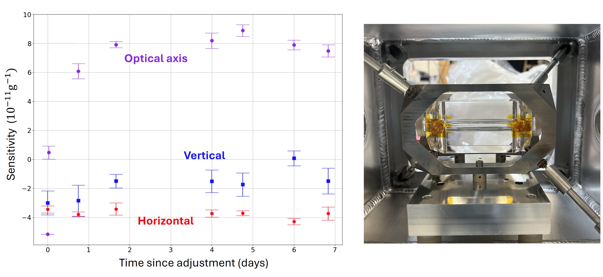
转动任何一颗螺丝后，我们观察到加速度灵敏度随时间发生很大变化，并在数天后达到新的稳态（图 10）。由于调节与测量之间存在很长的延迟，原位补偿将耗费很长时间。我们推测这种以天为尺度的稳定行为可能源于与腔体接触的氟橡胶（viton）球的机械弛豫。在尝试原位调节后，我们破真空，将镜架笼组件转移到另一个没有馈通件的真空腔室中以便部署。转移对加速度灵敏度的影响总结于表 4。
| Before cage transfer | – | ||
| After cage transfer |
附录 E CavT 的热膨胀
如正文所述，我们将 CavT 设计为在 30 ∘C 处具有热膨胀系数过零点（ZCTE），但实测 ZCTE 位于 20.0 ∘C。我们在图 11 中给出了 CavT 及其前代腔体 [4]（昵称 Oscar）的热膨胀测量结果。两个腔体的间隔体和支撑环均切割自同一锭料。我们订购了本征 ZCTE 为 ∘C、容差为 C 的 7973 ULE 材料。
这些腔体的设计基于用有限元模型对腔组件热膨胀的仿真。在该模型中，ULE 元件的热膨胀由下式给出：
| (4) |
而熔融石英基底则用恒定的 CTE 建模。仿真返回腔镜之间的相对长度变化 ，我们将 拟合为如下形式：
| (5) |
有限元计算中假定 ULE 的 CTE 斜率为 ，该值取自 [18]，该文献使用了一种来源不明的掺钛玻璃。如图 11 所示，相对于我们实测的 CTE 斜率，该参考文献对 CavT 高估了 2 倍，对 Oscar 高估了 3 倍。康宁 7973 ULE 数据手册曲线给出的 CTE 斜率为 。然而，我们自己的测量结合近期同样使用康宁 7973 ULE 的 ULE 腔体文献 [12, 16]，表明 CTE 斜率的典型值更小，约为 。CavT（Oscar）总共 10 ∘C（8 ∘C）的 ZCTE 偏差中，有 4 ∘C（9 ∘C）可由这一 CTE 斜率差异解释。剩余的偏差可归因于 ULE 本征 ZCTE 的 ∘C 容差。
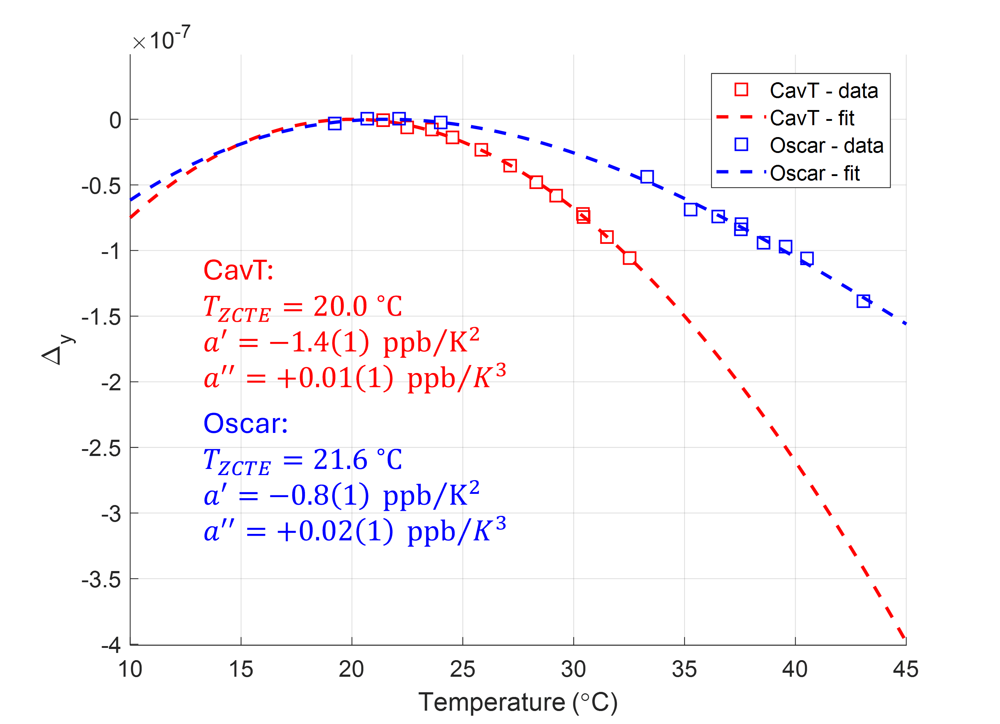
附录 F 优化腔体光响应
我们发现，CavT 技术噪声的主要来源之一是系统对光功率变化的响应，如图 2 所示。Kraus 等人和 Ma 等人展示了一种新技术，通过优化选择偏振轴和腔内光强来补偿带有 : 反射镜的谐振腔的光响应 [16, 22]。由于时间进度压力，我们于 2025 年将系统部署到蓝山（Mt. Blue Sky），当时还未能将这项技术应用于 CavT。正文中，图 2 的技术不稳定度预算和图 6 中标注为“Mountain 2025”的稳定度测量结果，反映的是我们优化 CavT 光响应之前的性能。
从蓝山返回后，我们测量了 CavT 对光功率阶跃变化的响应随透射光功率和偏振轴的变化关系（图 12）。我们观察到了明显的光致双折射特征，如 [16, 22] 所示；然而，在快轴上我们观察到了光致双折射效应与光热效应的部分抵消。相比之下，Kraus 等人在 20 cm 可搬运谐振腔的慢轴上观察到了抵消现象 [16]，而 Ma 等人在 48 cm 实验室谐振腔的快轴上发现了抵消现象 [21]。尽管 [22] 中的公式 6 提供了光致双折射效应时间依赖性的详细模型，但我们发现更简单的双指数传递函数能很好地拟合我们测得的光响应，并且足以评估谐振腔的光强预算。CavT 部署到蓝山时，光耦合到慢轴，透射功率为 690 nW，低频光灵敏度为 1.4 kHz/W，时间常数为 7.3 s 和 0.42 s。我们发现最佳配置是耦合到快轴，透射功率为 86 nW，低频光灵敏度为 0.3 Hz/W，时间常数为 3.5 s 和 0.16 s。
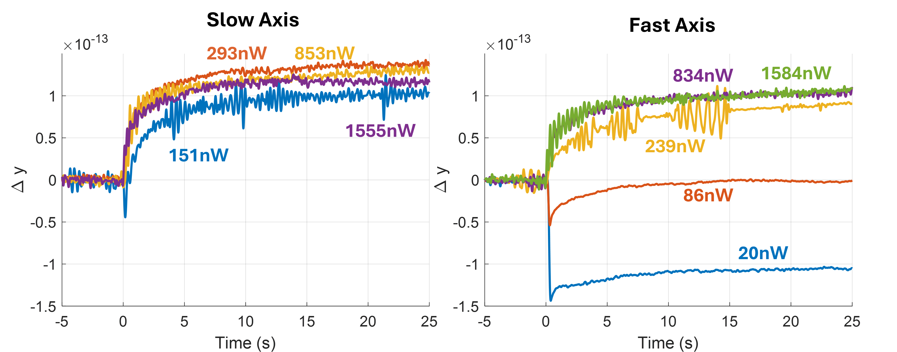
图 13 总结了 CavT 相对于 NIST 参考激光器的稳定度，包括我们实施部分光响应抵消前后的情况以及两次部署期间的数据。我们在科罗拉多大学博尔德分校部署期间实施了部分光响应抵消。虽然在 s 时耦合到慢轴的 CavT 稳定度存在一些变化，但在耦合到快轴并实施部分光响应抵消的情况下，我们尚未观察到 CavT 稳定度的显著变化。系统在科罗拉多大学博尔德分校期间 s 稳定度的恶化，很可能是由于 NIST 与该大学之间 3.2 km 光纤频率传递所引入的额外噪声。
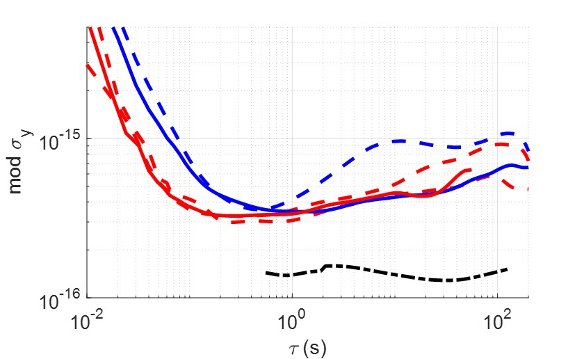
附录 G 2026 年部署至蓝天山的其他改动
除优化 CavT 的光响应外，在 2026 年部署至蓝天山之前及期间，我们还对 TSLS 进行了若干其他改动。
G.1 缓解 CLaRC 中的热梯度波动
我们观察到，每隔 22.5 小时，578 nm“Clock”光纤噪声消除（FNC）链路的频率会偏离至峰值 ，然后在大约 10 分钟内恢复原值；这一现象见于 CLaRC 578 nm 链路与实验室 578 nm 激光链路之间的外差拍频，如正文图 4 所示。该行为正是正文图 4 中“Clock”链路环外稳定度在 = 1000 s 附近出现凸起的根源。经查明，这一高度可重复的现象源于一个每日发生的热事件，其来源是位于 CLaRC 封装正下方、TSLS 服务器机架上的不间断电源（UPS）（见正文图 1）。在该事件期间，我们观察到为稳定 CLaRC 底板温度所需的加热功率下降，表明存在峰值 20 mW 的瞬态外部热负载。该瞬态热负载会使 CLaRC 底板前端上升约 30mK，后端下降约 30mK。CLaRC 的 FNC 链路之间最长的未补偿光纤段是 PPLN 倍频器的输入与输出光纤。PPLN 位于 CLaRC 前端，因此会随瞬态梯度经历局部温度变化。我们通过将 UPS 从 CLaRC 附近移走消除了这一特定现象。为防止任何其他瞬态热梯度源耦合进“Clock”FNC 链路，我们将 PPLN 的输入与输出光纤抬高到一个独立小平台上，该平台配有独立的珀尔帖元件，可进行与底板无关的温度控制。
G.2 基于 FPGA 的 PDH 伺服
在 2025 年蓝山（Mount Blue-Sky）部署期间，光纤激光器通过一个由快、慢两路输出组成的模拟控制器锁定到 CavT 上：快输出控制位于光纤激光器输出端的反馈光纤声光调制器（AOM，正文中图 1 未画出）上的频率调制（FM），慢输出控制光纤激光器谐振腔上的压电换能器。该实现方案受困于相对频繁的 Pound-Drever-Hall（PDH）失锁，只能通过调节快控制器的输入失调来解决。在我们将模拟控制器更换为以商用现场可编程门阵列（FPGA）平台为核心的数字控制器（与 [6] 类似）之后，这些问题得以解决。PDH 误差信号由 14 bit 模数转换器（ADC）以每秒 250 兆采样率读取。对 ADC 输入进行多样本平均以提高分辨率，从而能够以百万分之一（ppm）量级劈分腔线。数字化后的误差信号随后送入作为快反馈级的 PI2D 控制器。该快控制器对驱动反馈 AOM 的片上直接数字合成器（DDS）进行频率调制。快 PI2D 级的输出还被送入一级 PI2 控制（作为慢反馈级），再经 16 bit 数模转换器（DAC）以每秒 250 兆采样率产生压电换能器的控制电压。我们观察到，完成这一替换后，TSLS 的稳定度没有统计上显著的下降，且 PDH 失锁的时间间隔从几天改善到一周以上。
G.3 CavT 主动 RAM 稳定
图 2 右图所示的 RAM 不稳定度，是在无光路主动 RAM 控制、且 TSLS 仍位于温控实验室时，将光失谐偏离腔共振后，在 PDH 探测器上进行环外测量得到的 RAM。在 2026 年蓝山部署期间，观测到的 TSLS 不稳定度比 2025 年部署期间更差。作为一种临时解决方案，我们实施了主动 RAM 伺服，经验上看它似乎在短时间尺度上改善了 TSLS 的稳定度。图 6 右图所示的 2026 年部署稳定度数据是在主动 RAM 控制开启的情况下采集的。该主动 RAM 控制的结构基于 [31]。
References
- [1] (2019) In-Orbit Performance of the GRACE Follow-on Laser Ranging Interferometer. Physical Review Letters 123 (3), pp. 031101 (en). External Links: ISSN 0031-9007, 1079-7114, Link, Document Cited by: Stable Laser Deployed on a 4.3 km Mountain.
- [2] (2024) Clock with 8 × 10−19 Systematic Uncertainty. Physical Review Letters 133 (2). External Links: Document Cited by: Stable Laser Deployed on a 4.3 km Mountain.
- [3] (2024) International comparison of optical frequencies with transportable optical lattice clocks. arXiv. Note: arXiv:2410.22973 [physics]Comment: 29 pages, 5 figures External Links: Link, Document Cited by: Stable Laser Deployed on a 4.3 km Mountain, Stable Laser Deployed on a 4.3 km Mountain.
- [4] (2025) Deployment of a transportable Yb optical lattice clock. Optics Letters 50 (2), pp. 646 (en). External Links: ISSN 0146-9592, 1539-4794, Link, Document Cited by: Figure 11, Appendix E, Stable Laser Deployed on a 4.3 km Mountain, Stable Laser Deployed on a 4.3 km Mountain, Stable Laser Deployed on a 4.3 km Mountain.
- [5] (2014) A compact, robust, and transportable ultra-stable laser with a fractional frequency instability of 1 × 10−15. Review of Scientific Instruments 85 (11), pp. 113107 (en). External Links: ISSN 0034-6748, 1089-7623, Link, Document Cited by: Stable Laser Deployed on a 4.3 km Mountain.
- [6] (2024) Towards space-deployable laser stabilization systems based on vibration-insensitive cubic cavities with crystalline coatings. Optics Express 32 (4), pp. 5380–5396 (EN). External Links: ISSN 1094-4087, Link, Document Cited by: §G.2, Stable Laser Deployed on a 4.3 km Mountain, Stable Laser Deployed on a 4.3 km Mountain, Stable Laser Deployed on a 4.3 km Mountain.
- [7] (2024) Roadmap towards the redefinition of the second. Metrologia 61 (1), pp. 012001. External Links: ISSN 0026-1394, 1681-7575, Link, Document Cited by: Stable Laser Deployed on a 4.3 km Mountain.
- [8] (2012) Delivering pulsed and phase stable light to atoms of an optical clock. Applied Physics B 107 (2), pp. 301–311 (en). External Links: ISSN 0946-2171, 1432-0649, Link, Document Cited by: Stable Laser Deployed on a 4.3 km Mountain.
- [9] (2021) A Transportable Ytterbium Optical Lattice Clock. PhD Thesis, University of Colorado Boulder. External Links: Link Cited by: Appendix B, Stable Laser Deployed on a 4.3 km Mountain.
- [10] (2024) Long-distance chronometric leveling with a portable optical clock. Physical Review Applied 21 (6), pp. L061001 (en). External Links: ISSN 2331-7019, Link, Document Cited by: Stable Laser Deployed on a 4.3 km Mountain, Stable Laser Deployed on a 4.3 km Mountain.
- [11] (2015) 8 × 10^−17 fractional laser frequency instability with a long room-temperature cavity. Optics Letters 40 (9), pp. 2112 (en). External Links: ISSN 0146-9592, 1539-4794, Link, Document Cited by: Stable Laser Deployed on a 4.3 km Mountain.
- [12] (2022) Transportable clock laser system with an instability of 1.6 × 10. Optics Letters 47 (20), pp. 5441 (en). External Links: ISSN 0146-9592, 1539-4794, Link, Document Cited by: Table 2, Table 2, Appendix A, Appendix A, Appendix E, Stable Laser Deployed on a 4.3 km Mountain, Stable Laser Deployed on a 4.3 km Mountain, Stable Laser Deployed on a 4.3 km Mountain, Stable Laser Deployed on a 4.3 km Mountain.
- [13] (2025) Demonstration of a mobile optical clock ensemble at sea. Nature Communications 16 (1), pp. 6063 (en). External Links: ISSN 2041-1723, Link, Document Cited by: Stable Laser Deployed on a 4.3 km Mountain.
- [14] (2025) Improved systematic evaluation of a strontium optical clock with uncertainty below 1 × 10-18. arXiv. Note: arXiv:2509.13991 [physics]Comment: 11 pages, 10 figures External Links: Link, Document Cited by: Stable Laser Deployed on a 4.3 km Mountain.
- [15] (2012) Thermal noise in optical cavities revisited. J. Opt. Soc. Am. B 29 (1), pp. 178–184. External Links: Link, Document Cited by: Appendix A, Appendix A, Appendix A, Stable Laser Deployed on a 4.3 km Mountain.
- [16] (2025) Ultra-stable transportable ultraviolet clock laser using cancellation between photo-thermal and photo-birefringence noise. Opt. Lett. 50 (2), pp. 658–661. External Links: Link, Document Cited by: Appendix A, Appendix E, Appendix F, Appendix F, Stable Laser Deployed on a 4.3 km Mountain, Stable Laser Deployed on a 4.3 km Mountain, Stable Laser Deployed on a 4.3 km Mountain.
- [17] (2025) Frequency stability of 2.5 × 10-17 in a Si cavity with AlGaAs crystalline mirrors. arXiv. Note: arXiv:2509.13503 [physics] External Links: Link, Document Cited by: Stable Laser Deployed on a 4.3 km Mountain.
- [18] (2010) Tuning the thermal expansion properties of optical reference cavities with fused silica mirrors. J. Opt. Soc. Am. B 27 (5), pp. 914–919. External Links: Link, Document Cited by: Appendix E, Stable Laser Deployed on a 4.3 km Mountain.
- [19] (2013) Cavity-stabilized laser with acceleration sensitivity below 10 − 12 g − 1. Physical Review A 87 (2), pp. 023829 (en). External Links: ISSN 1050-2947, 1094-1622, Link, Document Cited by: Stable Laser Deployed on a 4.3 km Mountain.
- [20] (2025) Ultrastable laser based on a room temperature ule cavity with crystalline algaas coatings. In 2025 CLEO/Europe-EQEC, Vol. . Cited by: Stable Laser Deployed on a 4.3 km Mountain.
- [21] (2024) Ultrastable lasers: investigations of crystalline mirrors and closed cycle cooling at 124 K. arXiv. Note: arXiv:2404.02647 [physics] External Links: Link, Document Cited by: Appendix F.
- [22] (2026) Photo-birefringent effects in crystalline AlGaAs mirror coatings. Optics Express 34 (14), pp. 25456 (en). External Links: ISSN 1094-4087, Link, Document Cited by: Appendix F, Appendix F, Stable Laser Deployed on a 4.3 km Mountain.
- [23] (2026) Laser stabilized to a room temperature cavity with AlGaAs coatings reaching $4.2 \times 10^{-17}$ fractional frequency instability. arXiv. Note: Version Number: 1 External Links: Link, Document Cited by: Figure 2, Stable Laser Deployed on a 4.3 km Mountain.
- [24] (2025) High-Stability Single-Ion Clock with 5.5 × 10 − 19 Systematic Uncertainty. Physical Review Letters 135 (3), pp. 033201 (en). External Links: ISSN 0031-9007, 1079-7114, Link, Document Cited by: Stable Laser Deployed on a 4.3 km Mountain.
- [25] (2018) Atomic clock performance enabling geodesy below the centimetre level. Nature 564 (7734), pp. 87–90 (en). External Links: ISSN 1476-4687, Link, Document Cited by: Stable Laser Deployed on a 4.3 km Mountain, Stable Laser Deployed on a 4.3 km Mountain.
- [26] (2019) High-stability optical frequency transfer with all-fiber architecture for optical lattice clocks. Electronics and Communications in Japan 102 (5), pp. 43–48. External Links: Document, Link, https://onlinelibrary.wiley.com/doi/pdf/10.1002/ecj.12167 Cited by: Stable Laser Deployed on a 4.3 km Mountain, Stable Laser Deployed on a 4.3 km Mountain.
- [27] (2026) Laser fractional frequency instability at 4 ×10 with a room temperature optical reference cavity. Optica 13 (7), pp. 1190 (en). External Links: ISSN 2334-2536, Link, Document Cited by: Stable Laser Deployed on a 4.3 km Mountain.
- [28] (2024) Optical clocks at sea. Nature 628 (8009), pp. 736–740 (en). External Links: ISSN 0028-0836, 1476-4687, Link, Document Cited by: Stable Laser Deployed on a 4.3 km Mountain.
- [29] (2020) Test of general relativity by a pair of transportable optical lattice clocks. Nature Photonics 14 (7), pp. 411–415 (en). External Links: ISSN 1749-4885, 1749-4893, Link, Document Cited by: Stable Laser Deployed on a 4.3 km Mountain, Stable Laser Deployed on a 4.3 km Mountain.
- [30] (2011) Force-insensitive optical cavity. Optics Letters 36 (18), pp. 3572 (en). External Links: ISSN 0146-9592, 1539-4794, Link, Document Cited by: Appendix B, Abstract, Stable Laser Deployed on a 4.3 km Mountain, Stable Laser Deployed on a 4.3 km Mountain, Stable Laser Deployed on a 4.3 km Mountain.
- [31] (1985) Servo control of amplitude modulation in frequency-modulation spectroscopy: demonstration of shot-noise-limited detection. Journal of the Optical Society of America B 2 (9), pp. 1527 (en). External Links: ISSN 0740-3224, 1520-8540, Link, Document Cited by: §G.3.
- [32] (2022) Transportable 30 cm optical cavity based ultrastable lasers with beating instability of 2 × 10-16. Applied Physics B 128 (12), pp. 220 (en). External Links: ISSN 1432-0649, Link, Document Cited by: Stable Laser Deployed on a 4.3 km Mountain, Stable Laser Deployed on a 4.3 km Mountain.
- [33] (2022) Transportable 30 cm optical cavity based ultrastable lasers with beating instability of 2 × 10-16. Applied Physics B 128 (12), pp. 220 (en). External Links: ISSN 1432-0649, Link, Document Cited by: Appendix A.
- [34] (2023) Excess Noise and Photoinduced Effects in Highly Reflective Crystalline Mirror Coatings. Physical Review X 13 (4), pp. 041002 (en). External Links: ISSN 2160-3308, Link, Document Cited by: Stable Laser Deployed on a 4.3 km Mountain.